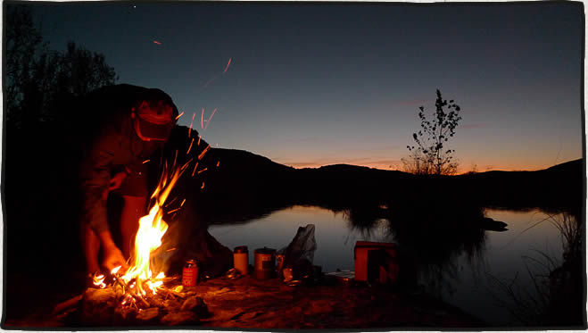

Devil's River Kayaking
posted Apr 14, 2009 On Friday, November 28th through Monday, December 1st Mike Longfellow and I paddled the Devils River from Baker’s Crossing to Rough Canyon Marina (47 miles). This river is notoriously pristine and remote. The weather was perfect and there was plenty of good fishing and rapids along the way.
We arrived at Baker’s Crossing Campground on Thursday afternoon Thanksgiving Day. The trip from Austin took only 4½ hours. Being a long holiday weekend I was prepared for the campgrounds to be crowded and plenty of traffic on the river over the next couple of days. Baker’s Crossing is privately owned and the only legal access to the river is 15 miles downstream at the Devil’s River State Park. The river is almost entirely enclosed by private land and notorious for land owner confrontations with paddlers. I couldn’t believe it when we got to the limited campground and were the only ones there. After speaking with the family that owns the place and paying our $10 for the night we didn’t see another person for two days. Despite all of the warnings we heard about landowners we never had a problem much less even see anyone. It probably helped that with the river flowing at 240 cfs we were able to camp on some of the many small rock islands that appear in lower flowing conditions.
 With our campsite right on the river and kayak put-in we didn’t waste any time to start fishing. The first of the many large pools that form is only 100 yards downstream. We caught a couple of perch here. The next 15 miles of river to Dolan Falls would be a succession of a long slow pools with a set of rapids at the end. Most rapids were class I-II with a few class III to get us wet (I got swamped twice).
With our campsite right on the river and kayak put-in we didn’t waste any time to start fishing. The first of the many large pools that form is only 100 yards downstream. We caught a couple of perch here. The next 15 miles of river to Dolan Falls would be a succession of a long slow pools with a set of rapids at the end. Most rapids were class I-II with a few class III to get us wet (I got swamped twice).
Day one on the river
We woke up early on Friday morning and were loaded and in river by 9am. Our plan was to take our time and fish as much as possible along the way and look for a spot to camp after Jarrett’s Crossing at mile 9. About a mile past the crossing we found a perfect little rock island to spend the night. The photo at the top of this article is our 1st night’s camp. With still a couple of hours of daylight left we paddled a few hundred yards back to do some fishing in a large pool we passed. This was the first of several deep, clear areas that we dubbed “wild kingdoms”. All kinds of aquatic life would congregate in one area. Schools of a huge carp and perch were everywhere with large bass cruising around. From then on we let each other know if we were entering a wild kingdom area so we could get the fishing poles ready.  We each caught a couple of nice bass here to fry up for dinner. Mike caught a fat Guadalupe bass that turned out to have a mouse in it’s stomach. I had to try my mouse pattern on the fly rod the next day – no bites. The fish were hitting on clauser minnows and top water poppers though.
We each caught a couple of nice bass here to fry up for dinner. Mike caught a fat Guadalupe bass that turned out to have a mouse in it’s stomach. I had to try my mouse pattern on the fly rod the next day – no bites. The fish were hitting on clauser minnows and top water poppers though.
Day two
The next morning we set off with the plan of finding another island a couple miles past Dolan Falls. This would give us another easy day to spend fishing and enjoying the river. We encountered one large reed jungle to go through which turned out to be a fun ride. You pick a narrow chute and let current move you along until popping out the other side. We reached Dolan Falls at mile 15½ a little after 2pm and portaged our boats on river right. Grass Patch Springs Rapids was coming up next but we got a little off course by following an opening on river right. This ended up leading us through a narrowing stream where we eventually had to get out of the kayaks and pull them through the woods/shallow stream for several hundred yards until we came out at the bottom of Grass Patch Springs Rapids. Large carp were wriggling their way up stream in water that was no more than two inches deep. We came across a green canoe that was completely wrapped around a tree a foot above the current water level near the bottom of the rapids. Another half mile down and the river started to open into another nice long pool. We made camp on a small rock island a little after mile 17 and prepared for another fish fry.
Day three
Starting out on Sunday morning was one of the most exciting moments of the trip – Three Tier Rapid (Class III+). Less than a half mile paddle from camp and we were on top of it. We were greeted with a 90° turn river right and three steep chutes to choose from. The roar of the rapids below made it difficult for Mike and I to hear each other. After scouting the far left chute out of our boats, we decided to line our boats down the first chute to position ourselves above the first tier. Paddling down these upper chutes was impossible at the low flow we were running the river. Once we were positioned at the top of the rapids running it went smoothly. We both made it without getting swamped. Stay all the way river left. The video Mike took made it look even more dramatic – his camera was zoomed all the way and was unable to zoom out after he started.
We had a few more miles before reaching the first signs of civilization. That few miles contained three sets of rapids: Indian Creek Rapid (class III), Rough Canyon Rapid (class II) and Reed Chutes Rapid (class II). Devils River Outfitters, the home and business of Gerald Baily, is one of the first buildings we came across. A little further down river we encountered Dry Devil’s Rapid (class II+). I got turned sideways and swamped between two large boulders entertaining the nice men sitting on their porch on the bluff above us. After emptying the boat with Mike’s help and picking a new line, we negotiated the remaining rapids with no problem. The men above were cheering us on as we passed.
Day three (unplanned additional miles)
Here is where I should say that we didn’t actually plan on doing the entire 47 miles to Rough Canyon Marina. We originally arranged a shuttle with Michelle, a lady that owns some property on the river, to pick us up at the low water around mile 24 crossing at 2pm. We were passing through this area at exactly 2pm having stopped a couple of miles back since we were making good time. Our landmark was to be a blue ford pickup on the riverbank. Not seeing any truck we cruised past our intended take out and immediately encountered about a mile of fast moving water and rapids. It didn’t take long to realize my error. Having passed by the Blue Sage Subdivision around the the creek that flows by the low water crossing we were back to the remoteness of Devil’s River. There also has not been any cell phone reception since the start of our trip. We decided to simply keep paddling the remaining 22 or so miles with one more night on the river. Unfortunately this meant no more fishing since now we needed to make better time.
During my research before the trip I spoke with fishing guide Kevin Stubbs. Kevin warned me that he has not heard of anyone doing the entire river in years and that the lower part where we were now headed could possibly be a huge maze of grass jungle. We did encounter a large stretch of grass jungle but nothing that impeded our progress. We made it to the Weir Dam low water crossing around Mile 32½ in surprisingly good time – around 5pm. Here the river really starts to widen, now several hundred yards wide instead of the tight confines of the upper section.  The river was opening up into Lake Amistad. With darkness approaching we paddled as far as could into a slight headwind. The sides of the river were cliffs and small ledges at this point. We stopped around mile 35 and made our last night’s camp on one of these ledges. Still no cell phone reception so I was unable to get in touch with Michelle. We ate the last of our food and were about to go to sleep when I heard the faint beep of my cell phone notifying me of a message. I had one bar of reception and was able to get a call through to notify Michelle we would be at the Marina in the morning.
The river was opening up into Lake Amistad. With darkness approaching we paddled as far as could into a slight headwind. The sides of the river were cliffs and small ledges at this point. We stopped around mile 35 and made our last night’s camp on one of these ledges. Still no cell phone reception so I was unable to get in touch with Michelle. We ate the last of our food and were about to go to sleep when I heard the faint beep of my cell phone notifying me of a message. I had one bar of reception and was able to get a call through to notify Michelle we would be at the Marina in the morning.
Day 4
We decided to it would be best to get paddling at sunrise so we could avoid any more headwinds that typically occur on Lake Amistad. Up at 6 and paddling by 7 we had 12 miles to go. With no headwind and calm water we made the last stretch to the Marina in 3 hours. After pulling our boats off to the side of the ramp we walked to Hooker’s, the local general store & bar. Michelle was surprised to hear from us by 10:30am and shuttled my truck to us within a couple of hours. It turns out that she was held at a border patrol checkpoint. She thought it was great that we did the entire river. Luckily she was showing a friend from Houston around the Devil’s River area so we just added to the experience. Hopefully she will do the same shuttle for us on our next trip. We’ll just plan on doing the whole thing from the beginning next time.
The trip back to Austin was only 4 hours from Rough Canyon Marina. Mike and I were happy with how things turned out aside from a flight he had to reschedule. Paddling the complete river allowed us to see the transition from a rough, narrow river at it’s origin to a deep, wide channel of Lake Amistad. We plan on doing the trip again with some more friends soon.
 This is my favorite photo from the trip. Look how clear the waters is. Mike is transporting some firewood to our island home on the first night of the trip.
This is my favorite photo from the trip. Look how clear the waters is. Mike is transporting some firewood to our island home on the first night of the trip.
 One of the many nice fish we caught
One of the many nice fish we caught
View my complete photo set on flickr
View Mike’s photo set on flickr
Lessons learned
- Buy The Devils River by Louis F. Albach. He has written spiral bound river guide books for the Pecos, the Rio Grande and the Devil’s River. The Devil’s River guidebook contained all of the topographical maps with features and rapids marked. There is also a mile by mile commentary on what to look out for as well as some interesting history and stories. I bought my copy at the local REI here in Austin. Two of the employees there have done the first 15 miles of the Devil’s before and gave me some more good information. If you want a guided trip contact Kevin Stubbs.
- Know exactly where the takeout is.
- The one peace of advice I found or heard from everyone was to wear sturdy shoes, not river sandals. This turned out to be well heeded. You spend enough time walking through the water over rough terrain that sandals would not have been fun.
- Bring a fishing pole, extra paddle and an extra fishing pole.
-
May I have whatever contact information from you that you have on Michelle. We have canoed the Devils before but we took out at Geralds. We would like to take at the marina next time.
— Isy Galvan · Feb 15, 08:40 PM
-
Give Mariene Walker a call – 830-774-0676. She will shuttle you from the Marina. She also runs the “Who Cares?” Bed & Breakfast near closer to Baker’s Crossing.
— Patrick · Feb 16, 10:48 PM
-
Looks like a great weekend, may have to plan a trip there.
— Joseph · Jun 5, 07:15 PM
Commenting is closed for this article.
Get in touch
Patrick [at] MountainDrawn.com